Такую систему можно попробовать научить различать, например, треугольники и квадраты.
Рабочий дневник 1997b
01.07.97 Схема разумной системы
вход -- > [образы] (Анализ) -- > [коды образов] -- > Обучающийся словарь -- > [коды команд] (Синтез) -- > [образы команд] выход
чувства -- > [коды чувств] Обучающийся словарь
Важно, что первичные чувства (боль) не анализируются. Они "генетически" зашиты. Кроме того, анализ и в какой-то мере синтез являются механическими (не творческими) операциями. И только перекодировка кодов образов может настраиваться при обучении или при творчестве.
Схема голосового попугая строится так же, как и схема диалогового текстового попугая. Но требуется большой объём вычислений по распознаванию образов речи (фонем).
Схема распознавания изображений строится аналогично, как абстрактная обобщающая система. Для уменьшения вычислений и обобщения масштабов можно устроить в системе распознавания изображений обратную связь: центр прицеливания (наиболее резкого зрения) может перемещаться и вращаться под действием части каналов выходных команд. Такую систему можно попробовать научить различать, например, треугольники и квадраты. Максимальное разрешение до одного пикселя получается в центральном квадрате. Добавить это в список тестов.
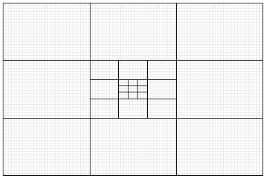
Объём ввода. Если в центре имеется 8 видимых точек и 1 центральная невидимая точка, в следующем квадрате - дополнительно 8 подквадратов по 9 точек и т.д. То для поля зрения шириной 81 точка достаточно 32 бита (4 байта) в чёрно-белом варианте (3-9-27-81 итого 4х8=32). Для 16 цветов нужно 16 байт, а для true color - 4x24=96 байт. На самом деле неверно абстрактно нумеровать цвета. Система восприятия цветов должна быть принципиально устроена так, чтобы информация воспринималась всегда, даже при самом примитивном устройстве этой системы. А по мере её усложнения должны быть заметны всё более подробные детали и оттенки. Например, в первую очередь должны восприниматься освещённость и общие контуры видимых объектов. Потом цвета, резкие границы и т.п. Так что над рациональной системой зрения надо подумать.
Простейшему кибер-жучку может быть достаточно такого зрения: цель вверху (1), внизу (2), слева (3), справа (4). Всего 2 бита.
Бестелесный жучок . На экране создаём маленький экранчик - мир для кибер-жучка. В этом мире находятся квадраты, треугольники, круги и т.п. Высокая оценка может даваться за нахождение "еды" (треугольник) и перенос её на стол (круг). Хватание и перенос происходит так же, как смена положения центра зрения. При рассматривании в этом центре рисуем очки, а при хватании - руку. Можно сделать, чтобы еды хватало только на некоторое время, и показать индикатор запаса еды. Можно расставить квадраты, чтобы они мешали переносу еды. Тогда жучку придётся перемещать квадраты, или ждать, пока они сами переместятся, или выбирать определённый путь для переноса треугольника.
Если прогнозирующий нейрон обобщает поток фраз то, что за образы получаются на выходе? Тема?
Для того, чтобы кибер мог потенциально осознать себя нужно, чтобы, он наблюдал свою собственную реакцию не только через общедоступный канал, например, через объектный мир, но и по внутреннему отдельному от объектного каналу. Например, мои фразы и фразы попугая поступают поочерёдно на один внешний вход анализатора. Но на второй вход должны подаваться только (те же) фразы попугая. С анализатора сигнал идёт на перекодировщик и, далее, на синтезатор фраз попугая. Фразы от синтезатора поступают ко мне (в объектный мир) и на специальный вход анализатора.
Устройство синтезирующего нейрона.
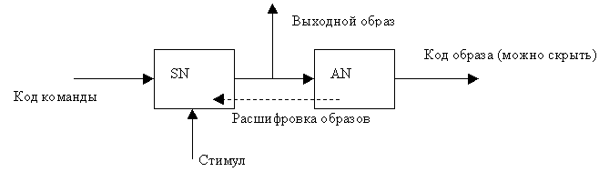
AN выдаёт код образа. Это некое характерное для текущего образа число. Когда точно такое число (код команды) подаётся на SN, то SN ищет в своём анализирующем нейроне нужный образ и начинает его воспроизводить. На вход SN поступает команда. Она по своей структуре не имеет никакого отношения к образу команды. Поэтому на пути команды должен быть словарь, преобразующий код команды в код образа команды. Обучение сосредоточено в этом словаре. А сами образы команд вполне могут быть генетически зашиты. Количество (разнообразие) образов в командном нейроне не так велико, как, если бы на его вход поступали сигналы от богатого внешнего мира. Командный нейрон помнит только свои собственные (однообразные) действия.
Код образа это один или несколько последовательных строк данных, такой длины, которая обеспечивает узнавание образа. В этом случае требуется подтверждающий сигнал "образ узнан". Например, AN1 передаёт код образа на вход AN2. Когда AN1 узнал свой входной образ, он начинает передавать прогноз этого образа на вход AN2 до тех пор, пока не получит подтверждение от AN2 или не потеряет узнавание. Если получено подтверждение, то AN1 перестаёт менять выходной сигнал. Если AN1 потерял узнавание (не узнаёт свой входной сигнал), то он выдаёт код 0. Такая система сложновата.
11.07.97 Как устроен код образа?
Если на вход анализирующего нейрона поступает информация по 100 или 1000 каналов, а узнаваемых образов всего несколько, то передача нескольких строк для обозначения образа выглядит совершенно неразумно. Лучше включить в нейрон словарь для хранения образов и присвоения им простых номеров. Этот словарь удобно назвать долговременной памятью (LM), поскольку в протоколе нейрона каждый образ хранится в большом количестве экземпляров, а в словаре - в одном. Поэтому в него много влезает. В словаре могут оказаться образы, которые давно вышли из употребления в реальном быстроменяющемся протоколе. Образы из словаря также удобны для быстрого прогноза.
Технология узнавания образа
- Выполняем текущий прогноз по протоколу и ожидаем момент, когда W >1/2
- Ищем образ, совпадающий (приближённо) с образом, предсказанным в словаре. Если нашли, то его номер и есть код образа. Если не нашли, добавляем новый образ в словарь.
- При переполнении словаря удаляем редкие или самые старые образы.
В LM хранятся начальные строки образов с той точностью, которая позволяет их различать. Для простоты - первые 10 байт . А если у образа нет начальных строк? Если нет узнавания, то в качестве кода образа выдаётся 0. Если обнаружилась ошибка в прогнозе, то просто выдаётся 0 и начинается попытка нового узнавания. Чтобы узнавание не длилось слишком долго (если система прогнозирования очень уж хороша) надо помнить образ во всю длину или насильно ограничить длину образов. То есть, надо помнить не "несколько первых строк", а считать полным образом всё, что помнишь. Если имеет смысл удлинить (объединить) образы в один, это сделает последующий анализирующий нейрон.
Следовательно, -- > не нужно делать (тратить время на) прогноз после начала узнавания! Достаточно сверять (отслеживать) хранимый образ из словаря с текущими строками протокола. Пока есть совпадение, на выходе находится код данного образа.
Также и хранимые образы можно выявлять не по результатам прогноза, а просто по их повторению в протоколе. Однако при отсутствии узнавания надо делать прогноз по протоколу с применением эвристических приёмов подмены каналов, ассоциаций и т.п. Иначе можно не узнать, то, чему уже был обучен на другом предметном поле.
Если долговременная память, или просто "память", общая, то объекты (образы), имеющие одинаковую структуру и разный смысл
- получают одинаковые имена
- и одинаковую логику.
Хотя это и нарушает объектную изоляцию.
Можно иметь LM в каждом нейроне, а те образы, которые наиболее устойчивы, переносить в общую память CM.
Как хранить в LM не образ, а типичный образ?
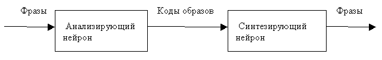
25.07.97 Как построить попугая без использования результата предсказания?
Кажется, что такая схема неработоспособна. Или нейроны должны быть ну очень умными. Вот более обескураживающий вопрос. Как предсказывать положение движущегося объекта без использования результата предсказания?
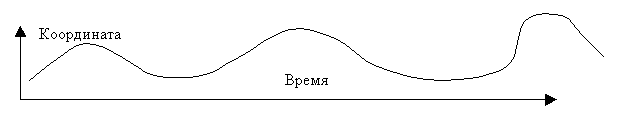
Однако, это возможно! Благодаря узнаванию образа. Допустим, мишень движется по стабильной кривой, так, что её скорость в каждой точке кривой зависит только от этой точки. Тогда со временем прогнозирующий и анализирующий нейрон будет всегда делать точный прогноз следующего положения мишени. Он будет выдавать на выход единственный код образа, некое число. Казалось бы, его недостаточно для слежения за мишенью, то есть детальное предсказание движения мишени невозможно, так как не меняются выходные данные узнающего нейрона. Это верно только если нет обратной связи. То есть, система без обратной связи после адаптации перестаёт думать. Однако, если система проявляет активность, например, преследует мишень, или хотя бы следит за ней взглядом, то образ совместного движения мишени и взгляда станет стабильным, только если это преследование всегда правильное. При уклонении от правильной траектории образ изменится и для его восстановления нужна активность синтезирующей системы. Так возможен синтез без перекодировки и без словаря!
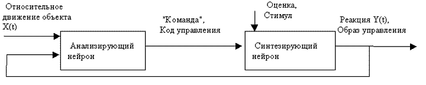
Команда автоматически ассоциируется с её образом внутри синтезирующего нейрона, так как она поступает на вход предсказателя наравне с данными (с образом управления) и со стимулом. Если предсказание субъективно, то есть имеет цель (не беспристрастно), то имеется возможность достичь хорошей оценки. При надёжном повторении образ управления попадает в долговременную память, что в дальнейшем ускоряет правильную реакцию на код команды. В шахматах цель очень далека. Как тут помогут образы? Как перебирать варианты?
В исполнении прогнозирующего нейрона анализ похож на синтез.
Анализ. (Прогноз без цели, беспристрастный прогноз).
- Сравниваем картины и накапливаем прогнозы с оценкой для всех вариантов.
- Выдаём наиболее вероятный прогноз.
- Сравниваем текущий образ с учётом прогноза с коллекцией в памяти и находим код образа.
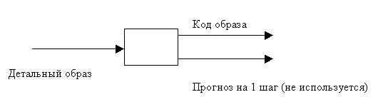
Синтез. (Субъективный прогноз).
- Сравниваем картины и накапливаем прогнозы с оценкой для всех вариантов.
- Среди наиболее вероятных вариантов выбираем тот, у которого есть или со временем будет положительный (в логическом смысле, то есть один из желательных) стимул. Если стимул вдруг стал отрицательным или надёжно прогнозируется, как отрицательный, то допускается сделать "менее надёжный", но "более обнадёживающий" прогноз вплоть до изменения своего поведения, берущегося из объективного протокола . Синтезирующий выход удобно назвать поведением.
- Сравниваем текущий образ с учётом прогноза с коллекцией в памяти и находим код образа.
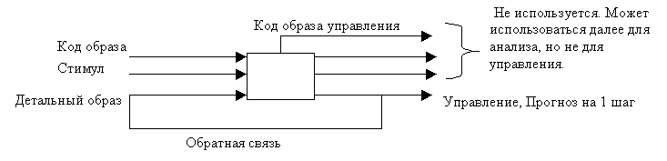
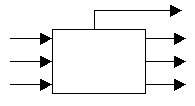
Если стимул константа, то синтез превращается в чистый анализ! То есть, обе функции выполняет один и тот же алгоритм.
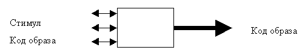
Для унификации логики вход и выход (прогноз) можно объединить.
Тогда не придётся делать отдельную цепь подтверждения или обратную связь. Порядок обмена данными:
- Источник выдаёт данные на шину
- Данные принимаются
- Делается прогноз на 1 ход
- Прогноз выдаётся на ту же шину и замещает первичные данные
- Код образа выдаётся на отдельный выход
- Если подключенное к шине внешнее устройство (источник или приёмник) способно обработать имеющиеся данные, то оно это делает, затем заменяет данные новыми. Если не способно, то просто заменяет данные новыми.
26 сентября 1997
Для ускорения (случайного) синтеза надо, чтобы перебор происходил среди небольшого количества вариантов (влево-вправо; вперёд-назад; плохо-хорошо; и т.п.) Для этого координаты или видимые размеры внешних объектов для кибер-жучка должны быть относительными. Никаких абсолютных координат! Однако это идея адаптации, а не собственно сознания.
При обучении ребёнка используется его стремление повторять за учителем. Как это может сделать нейронная сеть? Как возникает ассоциация между произнесённым и услышанным звуком? Для этого надо не строго следить за логической последовательностью событий. Если мозг узнал звук, который ещё до конца не произнесён, то он уже может связать звук как причину с произнесением, как одновременным событием. То есть в моей нейронной сети это происходит само собой. Однако для очень коротких событий строгая временная последовательность остаётся и ассоциация с нарушением причинности трудна.
Пример возникновения обратной причинной ассоциации.
- Я делаю усилия по приближению к объекту
- Начинаю к нему приближаться
- Вижу, что он увеличивается
- Бьюсь об него лбом
- Отступаю
После того как это несколько раз повторилось, и урок усвоен, рассмотрим новую ситуацию.
- Я стою
- Объект начинает приближаться
- Я вижу, что он увеличивается и понимаю, что стукнусь об него лбом. Поэтому заранее делаю движение освоенное ранее
- Отступаю
Проблема. Если система благодаря ассоциациям на протяжённые события освоит повторения, то она может зациклиться, повторяя сама за собой. Это конечно важно. Но сначала надо освоить повторения. :)
Аналоговый нейрон
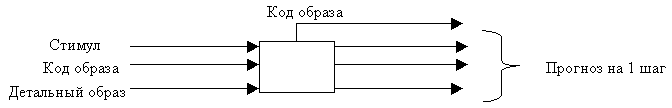
В схеме стандартных каналов нейрона "Стимул" это аналоговый канал. По нему возможно сравнение величин сигналов. Можно предусмотреть и другие аналоговые каналы среди каналов детального образа. Для всех аналоговых каналов операции "больше", "меньше" и "примерно равно" разрешены.
Predicting Engine
Основной предсказывающий блок нейрона назовём Predicting Engine (PE). Пусть данные поступают по N каналам. Всё равно, какие из них данные, какие образы, и какие - оценки. Некоторые могут быть аналоговыми, а другие - символьными. Для предсказания следующего шага применяем сравнения последних текущих шагов со всеми группами шагов занесёнными в протокол. Для символьных данных используется вероятностный прогноз, для аналоговых данных может применяться и арифметика. Каждая ячейка сравниваемой матрицы, каждая пара ячеек, каждая тройка и т.д. имеют веса. При совпадении ячейки или пары и т.д. вес прибавляется в вероятность прогноза. При неудачном прогнозе может проводиться уточняющая корректировка весов. Нейрон никому ничего не сообщает об алгоритме прогноза. Но вероятность прогноза можно сообщать.
Заметки
Возможно, что управляющий канал синтезирующего нейрона всегда может быть один. Это сильно упростило бы синтез. На каждый вход выходных датчиков должно быть по одному нейрону. Может этого достаточно и на входе. То есть парные обобщения нужно делать уже на уровне образов, а не физических сигналов.
\\\ Описать пример "биологического" или "механического" анализатора. Можно ли так же построить синтезатор?
Правильные выходные реакции могут быть внесены в LM выходных нейронов без ассоциаций с выходными образами (командами). Например, образ 0 означает, что нет ассоциации. Эти образы будут со временем обнаружены при синтезе, и ассоциированы с командами.
Для ускорения поиска в протоколе надо сначала сделать выборку, к примеру, по 3 строкам, а среди этой выборки проводить подробное сравнение. 3 строки это условное количество. Оно должно уменьшить объем рассматриваемых данных в 10-100 раз. Но должно оставаться всё же достаточно данных для статистики 3-10 строк.
Ключевые тесты:
- Прогноз двух однобайтовых координат
- Прогноз двухбайтового числа
- Диалог с фразами
- Диалог с буквами
- Поиск однобайтового поведения по оценке
- Способность к ассоциативному запоминанию
- Способность к рефлексу 2 порядка
- Дальний прогноз. Игра в шашки
- Ассоциация между движением и командой (влево, вперёд…)
- Преследование на плоскости
- Поиск цели с одновременным уклонением от хищника
- Прохождение лабиринта
01 октября 1997 Простой предсказывающий механизм, учитывающий многоточечные корреляции.
Текущее событие, то есть таблицу данных из N последних шагов сравниваем с каждым моментом в прошлом поточечно. Строка, вернее, каждая ячейка строки, следующей за данным моментом в прошлом, получает вес, равный количеству одинаковых кодов, расположенных на одинаковых местах с текущим событием. По мере просмотра всего протокола этот вес нарастает. В качестве прогноза выбираются наиболее весомые коды по каждому каналу. Так будут хорошо предсказаны и независимые и взаимозависимые. Эта технология может быть обобщена (усложнена) введением весов для каждой совпадающей позиции, для каждой совпадающей пары и т.д. Этим можно заняться потом, если алгоритм заработает.
При таком способе предсказывания возможно правильное предсказание события, которого раньше не было. Это я уже проверил расчётом (Прогноз движения точки в квадрате). Но в этом случае невозможно хранить и узнавать "образ".
Расщеплённый образ. Заводим долговременную память по каждому каналу независимо. Тогда каждый канал остаётся способным узнавать образы. В качестве обобщённого образа многоканального события выдаём все образы, узнанные каналами. Проверка узнавания образа каналом выполняется после того как сделан многоточечный прогноз. Таким образом, при N входах нейрона мы получим прогноз из N кодов и код образа длиной в N кодов одноканальных образов. Эти N-кодовые образы попадают в словарь с вытеснением устаревших образов. В словаре они получают списочный номер. Он и является обобщающим кодом образа текущего события. Физическое отражение этого события в памяти не хранится. Словарь - это тоже долговременная память (LM), но не для образов, а для N-кодовых сочетаний.
Кстати, число образов, узнаваемых нейроном, не должно быть больше, чем 255. Тогда единицей информации всюду останется байт. Не узнал - код 0. Как нейрон может понять, что он не узнал образ? Наверно, это невозможно.
В LM новый образ вытесняет не просто самый старый, а тот, на который он больше всего похож. Или просто самый похожий образ, независимо от его возраста и частоты повторяемости. Это нужно для некоторой преемственности номеров образов.
Что делать, если нейрон способен узнавать слишком много или слишком мало образов? Можно ли исправить ситуацию добавлением или убавлением нейронов? Не слишком ли мало (много) 255 штук образов?
24 октября 1997. Заметки.
Если прогноз по каналам полностью независимый, то невозможна ассоциация. Однако это не означает, что прогноз будет всегда неверным. Ассоциация физически может содержаться в протоколе, а не в прогнозе в виде зависимости от времени. Итак, если Y зависит от X, то эта зависимость уже отражена в прошлом. И независимый прогноз Y это учтёт. Пример. Надо предсказать X(t), t >0. Поможет ли в этом знание Y(t), t<0? Нет. Почему? Допустим, Y не зависит от X. Тогда ясно, что не поможет. Допустим Y=X. Тогда тоже не поможет. Но, конечно, ассоциация точнее учитывается при связанном прогнозе, когда XY воспринимается, как одно событие. То есть знание Y(t) не помогает предсказать X(t), но может помочь предсказать XY(t).
Канал Y может помочь выбрать прогноз в канале X, если имеется много похожих вариантов, и самостоятельный выбор невозможен. Тогда находим эти же (по времени) варианты в Y, и пробуем выбрать наиболее точный из них. Если это возможно, то этот же вариант выбираем и в X. То есть "совместное узнавание" процессов помогает тогда, когда невозможно раздельное узнавание.
Качество (надёжность) прогноза оценивать не нужно.
Неверное умозаключение от 08 октября. Синтез функции - это невозможная утопия, если нет никакого входного сигнала (и невозможна ассоциация). Почему? Пусть нейрон угадал одну точку этой функции и получил за это положительную оценку. Поскольку ранее такой оценки не было, то всё внимание нейрона переключится на эту точку, и он будет выдавать почти только её одну. Получение хотя бы ещё одной (второй) правильной точки невероятно. Это неверно . Я уже проверил алгоритм, определяющий все правильные точки требуемого поведения. Алгоритм таков. При каждом прогнозе своего поведения делаем объективный прогноз и прогноз при случайном шаге. Какой прогноз окажется лучше, тот шаг и выполняем. В этом случае правильные точки сохраняются, а те, которые не влияют на достижение цели, каждый раз заменяются случайными шагами. Поэтому они со временем тоже попадают в правильное поведение. При таком обучении, как и при любом другом, многое зависит от правильности оценок. Если они выдаются невпопад, то учитель не может надеяться на хорошее обучение. В экспериментах я заметил, что если оценки выдаются не очень правильно, но алгоритм наблюдает (по независимым каналам проходят эти данные) за похожим по темпу процессом, к которому надо приучиться, то приучение происходит надёжнее.
Шахматный прогноз. При поиске поведения можно проверять не один ход, а все ходы до точки Wish=0. Алгоритм таков. Делаем пробные ходы; выбираем лучший. Прогнозируем объективный ответ; выбираем худший прогноз. И так далее, пока не достигнем точки Wish=0. Получается бинарное дерево. Тот первый ход, который обеспечивает быстрейшее достижение цели из всех вариантов, и выбираем.
Никакой особый вес не должен добавляться при "субъективном" прогнозе, когда предвидится хорошая оценка. Поведение надо выбирать явно.
Итак, нейрон может выдавать на выход или поведение или код образа. В чём между ними принципиальная разница? Нельзя ли оставить только один вариант? Разница в том, что поведение вырабатывается только при наличии и постоянном подтверждении оценок. Если оценки изменяются (меняется система ценностей), то меняется и поведение. А коды образов не зависят от оценок. Они могут косвенно зависеть от самого поведения. Но только потому, что это поведение объективно наблюдаемо. Каждый нейрон, как анализирующий, так и моторный, может иметь 2 выхода: образ (обобщение) и управление (поведение). Возможно, что стимул (Wish) может передаваться (или транслироваться) от одного нейрона к другому, то есть нейрон может сам стимулировать работу соседних нейронов (ставить задачу). В общем, выход может содержать 3 компоненты: обобщение, поведение, стимул.
Синтезирующий нейрон для уменьшения вычислений может состоять из анализирующего нейрона, который сужает широкий вход до одного байта с кодами образов, и синтезатора, который преобразует один байт входа и один бит оценки в один байт поведения. Стимул (оценка) - это такой же объективный источник данных, как и все другие данные кроме поведения. Только поведение может изменяться по ситуации для улучшения оценки.
Текущий быстрый прогноз. Применяем алгоритм, который прогнозирует всё требуемое будущее. На каждом очередном шаге сдвигаем весь протокол вместе с будущим на 1 шаг назад по времени. Если прогнозируемый ход совпал с истинным, то никакого прогноза не делаем, а берём готовый ход из протокола. Если не совпал, то делаем.
Случайный быстрый прогноз. Рассчитываем веса sqrt(N) точек протокола!
Бинарный прогноз. Если мы рассматриваем байт, как 256 возможных логических величин, то при расчёте вероятностей на каждом ходу возникает разветвление на 256 вариантов. Если делать прогноз по каждому биту, то разветвление получается только на 2 варианта, а для байта - на 16. Это менее трудоёмко и требует меньше памяти. Тут помог бы квантовый компьютер.
Для оценки весов, обозначающих меру совпадения каждого момента из прошлого с текущим процессом, не обязательно сравнивать шаблоны. Достаточно сравнить только последний ход T=0 с каждым ходом в прошлом и прибавить полученный вес к весу, накопленному ранее. Это будет точный вес не по шаблону конечной длины, а по всему прошлому. Кстати, так взвешивается и возможное зацикливание протокола. Алгоритм на Паскале хранится в файле "AI алгоритм". Из-за того, что такой вес помнит всё прошлое, он очень инертен. Часто бывает, что процесс явно уже изменился, а он всё считает, что идёт ранее опознанный процесс. Пока хорошей меры борьбы с этой инерционностью я не придумал. Может и не надо. Можно использовать несколько весов разной "протяжённости".
Вопросы.
- Использование одного протокола для двух нейронов. Наверно, это утопия. Совпадение протоколов невероятно.
- Если входной сигнал не меняется, надо ли его записывать в протокол? Для синтезирующего нейрона - надо.
- Существует ли аналогия сплошной обучаемой среды, каждая точка которой обладает свойствами типа temporal neuron? Наверно, нет. Информация не представима векторами и плотностями.
- Подумать о делегировании оценки. Входной сигнал Wish - это желание заказчика. Свой сигнал Q (качество будущего) - это своё желание.
- В оценке качества прогнозируемого будущего надо убрать зависимость от Wish=0. Чем меньше Wish, тем лучше. 0 - частный случай. Тогда допустимы арифметические действия над Wish. Это скользкий путь.
- Если ячейка имеет тип Float, то возможны арифметические операции, а не только сравнение.
- Надо ли бороться с зацикливанием? Если нейрон на основании прогноза по точке t0 предсказывает свой собственный ход и выполняет его, то вес в точке t0 возрастает. После этого трудно отвлечь внимание от этого момента t0. Надо снизить вес своих ходов.
- Как делать длительный прогноз, если опорная точка t0 слишком близка к настоящему моменту? Получается циклический прогноз. То есть нейрон прогнозирует, что он зациклится. Только сильное внешнее (объективное) воздействие или наличие неудовлетворённого желания (Wish< >0 + разрешённое творчество) может вывести нейрон (и всю систему) из зацикливания.
- "Тест на умозаключение" - не без изъянов: Из A -- > B и B -- > C == > A -- > C. Если система привыкла, что после A всегда следует B, а после AB никогда не следует C, то она не обязана делать вывод A -- > C. Такой вывод может произойти, но не как точное умозаключение, а как догадка, на основании многочисленных примеров B -- > C. Это вовсе не закономерно. Может быть много разных догадок.
05.11.97 Обратная временная ассоциация (Способность к повтору).
1. Адаптирующаяся система (мозг) вырабатывает некоторые, например, случайные действия E(t) и сообщает их миру через эффекторы.
2. Наблюдает их результат в виде ощущений посредством сенсоров через внешний мир S(t).
3. Возникает строгая временная ассоциация E(t) -- > S(t).
4. Благодаря протяжённости событий E(t) и S(t) возникает также ассоциация между участками событий. В том числе, некоторые фрагменты e(t) могут восприниматься, как "последствия" фрагментов s(t).
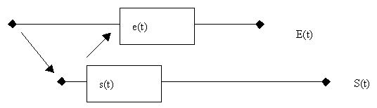
5. Пусть теперь в объектном мире происходит событие близкое к наблюдавшемуся ранее событию S(t), которое не связано с активностью мозга и с действием E(t).
6. Система может вспомнить ассоциацию s(t) -- > e(t), и начать "повтор" фрагмента E(t), начиная с e(t), надёжно ассоциированного с S(t), как с причиной.
7. Чем меньше задержка между E(t) и S(t), тем вероятнее более полный повтор.
Конечно, мозг не может заранее изобрести то, что он потом узнает из объектного мира, то есть всё событие S(t). Практически ассоциации со своими действиями создаются мозгом случайными фрагментами. А при повторении внешнего процесса S(t), мозг обращается сначала к разным участкам памяти и компилирует образ, исполняемый эффектором E(t). После нескольких попыток повтора накапливаются немного различающиеся экземпляры этого процесса, и образ E(t) уже может ассоциироваться с S(t) целиком.
Факт непроизвольного частичного повтора может привлечь внимание системы, если она обладает начальным самосознанием. В результате последующие повторения могут выполняться осознанно, то есть путём усилия воли . Это ускорит обучение. Однако точное воспроизведение начала процесса E(t) должно вызвать "физические" трудности, похожие на заикание, так как исполнение начала процесса происходит без прямого ассоциативного давления.
Так приобретённое поведение E(t) становится самостоятельным узнаваемым и применяемым образом . Оно может быть использовано при поиске правильного поведения самостоятельно в отсутствие "источника" S(t) или через некоторое время после завершения S(t). Этот отложенный повтор и считается повторением в обычном смысле слова.
Для повышения вероятности таких повторов надо, чтобы мозг был способен (в силу своей конструкции) повторять свои собственные ранее освоенные действия при поиске нового поведения. И даже, чтобы такой поиск поведения был обычным, в отличие от случайного (панического, творческого) перебора действий.
Способность к отложенному повтору зависит от глубины обобщения.
"Повтор" очень коротких событий, видимо, почти невозможен потому что не получается обратной временной ассоциации. Но в таком повторе, кажется, нет никакого конструктивного смысла. Он не нужен ни для адаптации, ни для обучения.
Система особенно способна к повтору действий другой такой же системы, так как физические воздействия этих систем на внешний мир близки, а значит, близки и (не восприятия!) физические проявления этих действий, которые наблюдают обе системы.
Способность к пропуску хода.
Пусть за (объективным) событием A(t) следует "плохое" событие B(t), при котором Wish возрастает. Система обучается и в ответ на A(t),B(t) делает действие E(t), восстанавливающее Wish=0. Может ли система выполнить E(t) или какое-нибудь другое защитное действие до наступления B(t)? То есть, может ли система изменить своё поведение в то время когда Wish=0?
Если система ищет поведение постоянно, в том числе и при Wish=0 , то она предвидит, что после A(t) наступит "плохое" B(t), и выбирает такое поведение, чтобы уменьшить издержки возможного B(t) или вообще не допустить события B(t). Следовательно, система должна ориентироваться не на Wish, а на предвидимое будущее. И не должна знать, можно ли улучшить это будущее.
"Будущее" – это прогноз Wish. Если неприятные события и их причины вообще не попадают в память, или быстро забываются, то система может до наступления B(t) начать делать то, что она ранее делала после B(t).
Алгоритм поиска поведения.
Делаем как можно более точный и беспристрастный (объективный) прогноз своего поведения B на следующем ходе и вычисляем функцию качества будущего Q1. "Мысленно" вместо хода B делаем такой ход, при котором величина Q предполагается максимальной (тактика - догадка), а если такой ход неизвестен, то делаем случайный ход (тактика - паника). Мысленный ход состоит в том, что мы берём предсказанные объективные параметры и предполагаемое своё поведение в качестве входных условий очередного хода, и на их основе делаем точный прогноз качества будущего Q2. Если Q2 оказывается лучше, чем Q1, то выполняем такой ход фактически. Если хуже, выполняем (повторяем) тот ход, который был объективно предсказан.
Образ поведения может быть более детальным, чем образ ассоциированной с ним команды. Поэтому время в синтезирующем нейроне должно идти само по себе без привязки к входному потоку команд. Но в анализирующем нейроне, который лишь распознаёт входной поток, время может тактироваться по изменению входных данных. Входные данные не меняются, жизнь в анализирующем нейроне замирает. Во-первых, это логически плохо. Во-вторых, так не бывает. Всегда что-нибудь меняется.
25.11.97
Итак, мой нейрон имеет широкий вход, но всего 1 (Generalization), 2 (+ Behavior) или 3 (+ Wish) выхода. Поэтому нельзя заменить любой участок сети одним нейроном. Этот участок может иметь много выходов. Однако можно обобщить свойства нейрона так, что замена фрагмента сети нейроном становится возможной. При этом от нейрона не убудет. :) Так как один выход - частный случай. Во-первых, ничего не стоит сделать любое количество выходов Behavior. Для увеличения количества выходов Generalization надо присваивать имена не всему входящему информационному потоку, а отдельным ручейкам. Такая возможность уже рассматривалась выше (см. Расщеплённый образ от 01 октября 1997). Более того, можно присваивать имена на уровне битовых или байтовых потоков, а затем их конденсировать в зависимости от необходимого количества выходов. Выходы Wish, видимо, должны в точности отражать входы Wish. Выходной сигнал Wish - это внутренний прогноз качества будущего. Нейрон "поручает" другому нейрону или другому "информационному потоку" искать поведение, которое улучшит его будущее. Это слишком искусственно.
Описание сети строится просто. Это список нейронов, включая сенсоры и эффекторы. Каждый вход приписан к одному из выходов. Номер этого выхода записан в атрибутах входа.
Операции c нейронами в сети.
- Добавление входов данных или желаний. Добавляем каналы и приписываем их к определённым обобщающим выходам. Число входов должно быть больше числа выходов.
- Добавление обобщающих выходов. Расщепляем входные потоки.
- Добавление выходов поведения. Добавляем каналы поведения и приписываем их к обобщающим выходам.
- Уменьшение входов данных или желаний. Отнимаем некоторые потоки от обобщающих выходов.
26.11.97 Фиксация взгляда
Какой сигнал Wish вырабатывает глаз, чтобы постепенно приучиться фиксировать взгляд на определённом предмете?
- Ассоциируем видимый образ с положительной (полезной) эмоцией. При этом достигается результат, который к глазам имеет косвенное отношение.
- Узнаём объект, ассоциированный с данным желанием Wish.
- Взгляд постепенно приучается следить за этим объектом, так как иначе ухудшается достижение ассоциированной цели. А в ближайшей перспективе - ухудшается прогноз качества будущего.
Если не было ассоциации видимого образа с удовлетворённым желанием, то фиксация взгляда невозможна. Почему возможна фиксация взгляда на других предметах? Как возникает фиксация на предмете, вызывающем отрицательную эмоцию? (На горячем чайнике). Если я этот предмет внимательно не рассмотрю, то будет (прогноз) неприятность. Далее опыт учит, что если любой новый предмет не рассмотреть, то будет плохо.
Борьба с зацикливанием на себе. Если нейрон предсказывает свой ход на основании своего же ранее сделанного хода и делает этот ход, то в силу правильного предсказания вес такого события (образа) возрастает. Поэтому на следующем ходе оно будет выбрано вновь. Чтобы этого не происходило надо снизить вклад в вес собственного поведения нейрона. Может быть - вплоть до нуля. Если Wish поставляется всем нейронам от сенсоров, то вполне может быть, что поведение данного нейрона вообще не влияет на поведение системы и на Wish. Зачем тогда нужен этот нейрон? Только для вывода G?
Роль ни на что не влияющего поведения.
Допустим, входной канал I - это случайный шум. Тогда его вклад в вес в среднем слаб, и он не влияет на прогноз. То есть не надо особо следить за вкладом в вес этого канала. Итак, для объективного прогноза случайный вход не мешает.
Рассмотрим теперь синтез. Пусть нейрон ищет поведение B(t), оптимизирующее функцию Q(Wish). Q - это, например, процент удовлетворённых желаний в будущем. Допустим B(t) не влияет на W(t) и, следовательно, на Q(W). Это может получиться в силу определённых свойств топологии сети. Нейрон не может понять, что его поведение не влияет на Wish. Он будет пытаться оптимизировать Q и подбирать B. В результате получится бессмысленное поведение. Однако для последующего нейрона это выглядит, как бессмысленный случайный вход, который ни на что не влияет и не делает погоды, как показано выше.
Если бы супервизор мог выявлять бессмысленные входы и перенаправлять их, то эффективность сети могла бы повыситься. Нейрон сам способен оценить свои входы (и выходы) по их значимости (влиянию) для Q. Это было бы более системно. Например, если некий вход S плохо коррелирует со значимым входом W, то вход S менее значим.
Делегирование Wish . Что может желать нейрон? Он может желать лучшего будущего Q. Это желание можно направить тем, нейронам, которые способны повлиять на вход Wish данного нейрона. Так возникает шизофрения.
Глобальное желание . Если Wish - это некая сумма желаний всех органов (сенсоров), которая поставляется всем нейронам синхронно, то каналы Wish всех нейронов совпадают. Можно содержать 1 канал Wish на тот раздел мозга, который его обслуживает. Например, на весь мозг. С одним и тем же Wish(t) ассоциируются разные входные данные и поведения в разных нейронах. Поэтому очень трудно убедиться в том, что улучшение Q(t) стало результатом поведения данного нейрона, так как все нейроны видят один и тот же сигнал Wish. Поэтому, при правильном прогнозе, у всех нейронов будет одна опорная точка t0! И это, наверно, плохо. Нет, это хорошо. Если опорные точки разные, то это значит, что нейроны плохо распознают текущее событие.
01.12.97
Каждый нейрон может содержать сеть из нейронов. Но общая сеть не может быть получена простым делением нейронов. Пусть сеть состоит из нейронов, каждый вход которых подключен к каждому входу сети, а выходы являются выходами сети. Тогда выходы G дают одинаковый сигнал. Но выходы B дают разные сигналы. Во-первых, потому, что используется случайный подбор поведения. Во-вторых, потому, что возможно уточнение поведения эффектором. В-третьих, только правильное поведение удовлетворяет общий канал Wish. Так возникает специализация (адаптация) нейронов. Она может развиваться и на более глубоком уровне.
Специализация. Если два нейрона получают одинаковые входы и одинаковые стимулы Wish, то они всё равно вырабатывают разные поведения B1 и B2. Потому что только правильное сочетание поведений B1 и B2 удовлетворяет данный сигнал Wish. Поэтому более общей схемой является 1 нейрон с двумя выходами B1 и B2. Нет смысла разделять тождественно равные каналы S1 и S2, и W1 и W2.
И вообще, если один из выходов подаётся на многие входы, то возникает ненужное дублирование протоколов одного и того же сигнала. Поэтому в сети протокол лучше вести не по входу, а по выходу. В том числе и вес, и образ каждого канала должны храниться на выходе. Тогда любое увеличение числа входов не увеличивает алгоритмическую сложность сети.
В сети с очень большим количеством входов нейронов реально подобрать такое подключение входов, чтобы выходы G давали нужное поведение. Так делает Louis. Но это требует изощрённого супервизора, и лишает сеть разума.
Как обойтись без G? И нужно ли это? Если нейрон всего 1, то выход G не нужен. 1 слой нейронов удобно заменить 1 нейроном с несколькими выходами B. Поэтому для "однослойной" сети выходы G тоже не нужны.
Трансляция Wish.
- 1 Возможно, что все до одного нейроны получают один и тот же сигнал Wish. Это наиболее "системно".
- 2 Если сигналы Wish поставляются разными органами, то появляется много желаний и много целей. А также - сложные цели. Если при этом каждая группа нейронов получает только один из сигналов Wish, то возникает специализация по целям или по обслуживаемым органам.
- 3 Если сигналы Wish получают только те нейроны, которые непосредственно получают потоки SENSE, тогда
- 3.1 нейрон должен уметь транслировать сигнал Wish. Потому что только выходной слой нейронов может реально воспользоваться этим сигналом. Не является ли случайно ассоциированное не улучшаемое поведение правильной (точной) трансляцией Sense -- > Behavior?
- 3.2 Нейроны-трансляторы не обязательно должны вырабатывать поведение.
- 3.3 Wish должен в достаточно явном виде достигать выходного слоя нейронов.
Зачем анализирующему нейрону транслировать Wish, если можно прямо подать Wish кому надо?
По протоколам Wish1, Wish2, Wish3 в трёх нейронах можно посчитать качество будущего Q1, Q2, Q3. Если выходы нейронов подключены к разным нейронам, то выходные нейроны будут самостоятельно обрабатывать сигналы Q. Если выходной нейрон один, то он должен уметь обрабатывать сразу несколько желаний. Например, можно их сложить
Q = Q1 + Q2 + Q3
Итак, в общем случае надо иметь несколько входов Wish и один выход Q. Удовлетворение Q вместо Wish практически ничего не меняет. Q - это среднее значение Wish в обозримом будущем.
Польза от Behavior и спонтанная специализация.
- Пусть нейроны имеют выходы B, G, W.
- Сначала внутренние выходы B, которые не подключены непосредственно к эффекторам, не могут влиять на поведение всей системы в целом, и вырабатывают шум. Шум мало вредит на фоне хорошо ассоциированных сигналов W и G.
- Когда внешнее поведение B достаточно определится и возникнет специализация во внешнем слое нейронов, тогда это поведение можно будет немного уточнить за счёт более грубо настроенных выходов B предыдущего слоя нейронов. И так далее вглубь сети. Это то же самое, как если бы выходы B внутренних нейронов сначала были вообще отключены, а потом их подключили.
- В середине сети есть группа нейронов, через которые проникают все потоки от всех входов ко всем выходам. Поэтому возникает возможность использовать "общую" логику в применении к разным выходам, то есть к сигналам разной физической природы.
- Всё это работает и на одном единственном нейроне. Он может реагировать точнее, но степень обобщения у него меньше.
Можно сделать сеть, у которой выходы B имеются только во внешнем слое, а потом добавить выходы B в предпоследний слой. Но можно (для общности) иметь выходы B сразу у всех нейронов. Они мало вредят, пока вырабатывают шум.
Сплошная обучаемая среда. Аналогия структуры мозга со сплошной средой неверна, так как в мозге существует дальнодействие (геометрически дальние связи между нейронами), что запрещено в обычных моделях сплошной среды, и нет направленных потоков, которые можно моделировать векторами. Тем не менее, мозг представляет собой пространство в логическом смысле слова, так как состоит из связанных элементов. Но это пространство не метрическое, хотя бы потому, что между каждыми двумя элементами существует множество прямых и цепных связей.
Плотность ассоциаций одного образа - это число образцов образа, одновременно имеющихся в протоколе. Или - число пиков. Размерность "штук в секунду".
Нейронная сеть.
- Имеем N нейронов: 1, 2, … n … N
- Нейрон n имеет Mn входов: S n 1 … S n m … S n Mn
- И Kn выходов: B n 1 … B n k … B n Kn
- Каждый вход подключён к одному из выходов в соответствие с таблицей подключений: S n m -- > B n' k
- Внешняя среда (сенсоры и эффекторы) эквивалентна одному или нескольким нейронам с заданными индексами.
Пример сети. Пусть каждый нейрон имеет 1 выход, а его входы подключены ко всем выходам всех нейронов, включая себя. В такой сети добавление нейрона приводит к добавлению 1 входа к каждому нейрону. Слияние двух нейронов приводит к увеличению числа выходов "слитого" нейрона до двух и к уменьшению числа входов у этого нейрона на 1 по сравнению с обоими объединившимися нейронами. Отсюда видно, что фиксированное количество выходов снижает гибкость архитектуры сети.
Итак
- Нейрон с N выходами тождественен N нейронам с 1 выходом. Доказательство: При одном и том же входе и общем сигнале Wish правильное поведение зависит от того, к какому эффектору подключён выход, а не от конструкции нейрона.
- Если каждый нейрон принимает все выходы всех нейронов сети, то объединение любых двух нейронов ничего не меняет. Следовательно, вся такая сеть эквивалентна 1 нейрону. Поэтому имеет смысл создавать сеть из функционально разделённых подсетей (зрение, перемещение, и т.д.) с разными сигналами Wish. При этом центральный мозг может состоять из 1 нейрона и получать обобщённый сигнал Wish от всех органов. Кстати, сам мозг тоже может давать вклад в сигнал Wish, так как по структурному смыслу Wish - это сигналы от сенсоров, чувствующих внутреннее состояние органов тела, а мозг - один из таких органов.
- При наличии общего желания Wish вклад каждого нейрона n в поведение сети эквивалентен частной производной от прогнозируемого качества будущего Q по поведению B n .
08.12.97 Обобщение G - это частный случай поведения B.
Доказательство: Пусть нейроны имеют только выход B, и такая сеть обучилась правильному поведению. После этого запрещаем изменять (улучшать) сигнал B, то есть, используем полученные ассоциации, и больше не обучаемся. Wish продолжает только регистрироваться. Теперь все выходы B, можно интерпретировать, как ассоциированное обобщение, ведь "имя образа" это сугубо субъективная собственность нейрона. Какую бы стабильную ассоциацию с входным сигналом он ни выдавал, её можно интерпретировать, как "имя образа" или обобщение. Следовательно, попытка буквально присваивать имена протяжённым во времени событиям уменьшает общность.
Из общеметодических соображений хорошо бы избавиться от G. Но тогда возникают, и должны быть решены некоторые "проблемы роста" сети. Прежде, чем появится новый нейрон, сеть должна быть уже вполне обучена. Иначе внутренние нейроны будут выдавать буквально случайное поведение, что, во-первых, затрудняет распространение информации от входа к выходу, и, во-вторых, достаточно глубокие нейроны вообще не могут быть практически обучены на основе общего поведения сети, так как их поведение не наблюдаемо.
Отсюда следует, что растущий мозг способен обучиться тому, чему невозможно обучиться, если не расти. Например, можно вырастить шахматного робота, или философа. Но такой философ, как бы ни старался, вряд ли когда обыграет в шахматы, того, кто занимается этим с детства.
Последовательное включение нейронов . Пусть все нейроны в цепочке, кроме последнего пред-эффекторного нейрона, имеют только выход G, а последний - только выход B. Обобщение в виде имён образов имеет смысл, только если разнообразие этих имён меньше, чем разнообразие входных данных. Допустим один нейрон снижает разнообразие данных вдвое. Цепочка из трёх нейронов снижает разнообразие входных данных в 8 раз, например с 256 до 32. Последний нейрон на основании этих 32 команд вырабатывает поведение. Типов поведения может быть сколько угодно. Даже если команды всего две 0 и 1, они могут приходить в различном порядке и темпе, на что может потребоваться специфическая реакция. Выход B, в общем, не снижает разнообразия входа. Поэтому в описанной цепочке из обобщающих нейронов никакой пользы от обобщения кроме потери детализации входящего процесса, видимо, не происходит. Можно представить, что разумное снижение детализации позволяет снизить темп обработки данных. Это создаёт своеобразную долговременную память.
Есть два способа такого замедления темпа:
- Ввод данных через такт. Это выглядит противоестественно. Не может быть, чтобы в природе одни нейроны жили медленнее других.
- Ввод только изменений данных (событий в компьютерном смысле). Это приводит к возможности логических ошибок. Совершенно точно, что это недопустимо для синтезирующего нейрона, так как его поведение должно быть строго синхронизировано с входным потоком. Следовательно, любой анализирующий нейрон на пути синтезирующего нейрона нарушает синхронизацию.
Преследование. Рассмотрим цепочку из одного анализирующего и одного синтезирующего нейрона, которая должна решать задачу преследования цели.
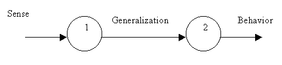
Допустим, нейрон 1 принимает за одно событие "уклонение мишени влево после простого преследования". Тогда после уклонения влево не будет соответствующей реакции нейрона 2, так как выход G не изменится. Со временем появится желание Wish, которое заставит нейрон 2 выработать более правильное поведение. Но это сделать трудно потому, что не известно, в какой момент в следующий раз удаление сменится на поворот влево. А повлиять на мнение нейрона 1 о правилах присвоения имён вообще невозможно. Как добиться, чтобы G представляли собой существенные для данной задачи образы, а не что попало? Как бы мы этого не добились, это не будет беспристрастное обобщение. Допустим, нейрон 2 чувствует, что ему не хватает детализации. Он может попросить предыдущий нейрон быть более детальным вплоть до чистой трансляции входного сигнала. Также можно попросить быть грубее. И то, и то нарушает объектную независимость. Лучше бы нейрона 1 вообще не было.
Последовательное включение без G. Пусть мы хорошо обучили один нейрон. После этого добавили нейрон последовательно с первым. Чтобы сохранить обучение сначала настроим второй нейрон на тождественную трансляцию входного сигнала. Первое время поведение такой нейронной сети будет правильным. Затем оба нейрона начнут безуспешно пытаться улучшить поведение. При этом внутренние ассоциации только укрепятся, так как начальное поведение уже было правильным. Следовательно, нет никакой пользы от последовательного включения синтезирующих нейронов. Но нет и вреда. А от G есть вред.
Хороший тест : Взять предмет, перенести его в корзину и отпустить. После этого предмет вновь появляется в произвольном месте. Оценка Wish=0 ставиться только за успешное опускание предмета в корзину и больше ни за что.
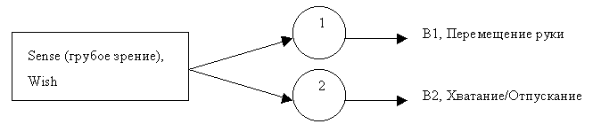
С большей общностью нейрон может быть один.
На этом примере видно, что ассоциации по абсолютным номерам плохо обобщаются. Пусть всё игровое поле имеет размер 10х10. Корзина расположена в точке 1,1. Пусть алгоритм приучился хватать предмет во всех точках, но ещё не освоил точку 3,3. Тогда при появлении предмета в точке 3,3 не возникает ассоциация, что надо переместить туда руку и схватить предмет, так как точно такого действия раньше не было.
Но если предмет не просто "бросается" из точки хватания в корзину, а "перемещается", то на своём пути он вполне мог уже много раз побывать в точке 3,3. В этом случае "плавность движений" способствует накоплению полезных ассоциаций. При появлении предмета в точке 3,3 система вспомнит, как из этой точки переместить предмет в корзину. А хватание по условиям задачи будет прочно ассоциировано с моментом отпускания предыдущего предмета. Если скорость перемещения ограничена, то по мере обучения будут находиться всё более короткие пути к корзине. Если перед тем как схватить предмет требуется "плавно" двигаться к нему, то рефлекс хватания должен выработаться по попаданию руки на цель. Если предмет требуется не просто донести до корзины, но и опустить в неё, то в процессе обучения такое "опускание" мимо корзины будет происходить достаточно часто. Поэтому точка 3,3 вполне может оказаться освоенной во всех смыслах. То есть, система может обучиться, как брать предмет из точки 2,2 и переносить его в точку 1,1. И на основании этого умения она будет знать(!), как брать предмет из любой точки в поле 10х10.
Итак, любые плавные (например, аналоговые) действия помогают накопить ассоциативный опыт. В этом смысле относительные величины гораздо полезнее абсолютных величин. Например, датчик зрения может видеть не абсолютный номер цвета, а небольшое изменение величины этого номера при переходе с одной точки изображения на другую, или при небольшом изменении освещённости.
Итак, при плавном перемещении появляется "знание" о том, как переместить предмет в корзину из той точки, где его раньше никогда не было. Но это касается только тех точек, в которых рука уже побывала. При увеличении поля до 20х20 всё дополнительное пространство является абсолютно неосвоенным. Если же система видит не номер точки, в которой находится предмет и корзина, а их относительные координаты, то на маленьком поле она может накопить опыт, который пригодится при увеличении поля. Этот опыт поможет также быстрее обучаться и на том же маленьком поле, так как пространство опыта малых относительных изменений гораздо "плотнее", чем пространство абсолютных значений, то есть оно содержит больше ассоциативных образцов.
Чем меньше диапазон возможных поведений и диапазон возможных ощущений, тем больше плотность опыта в пространстве поведений и ощущений.
10.12.97 Способ уточнения подключений или добавления/убавления нейронов.
- Допустим, на вход нейрона поступает только шум. Тогда и на выходе G будет шум. Причём число значений G будет весьма велико, например, при ширине выхода в 1 байт это будет 256 значений.
- Допустим, входной сигнал очень устойчив и закономерен, тогда на выходе G будет ровно 1 значение.
- Пусть оптимальное число значений G равно [G]опт.=sqrt[S] -- корень из числа значений входного сигнала. Тогда, если [G] >8[G]опт., то для данного нейрона вход похож на шум, и надо выполнить одно из следующих действий
- Уменьшить число входов
- Уменьшить число выходов B
- Переключить вход к менее шумному выходу
- Добавить нейроны на пути наиболее шумного входа
- Тогда, если [G]<[G]опт./8, то нейрон слишком легко справляется с узнаванием и надо выполнить одно из следующих действий
- Добавить вход
- Добавить выход B
- Удалить нейрон на пути наименее шумного входа
- Удалить данный нейрон
Что если G есть просто Tref или массив опорных точек, соответствующих пикам W(t)? Тогда
- Разные моменты Tref как бы соответствуют разным образам. Это плохо. Напротив, одновременно существующие пики W(t) соответствуют похожим образам. Но что тогда такое "разные образы"?
- У многих нейронов появляется "общий язык", так как многие нейроны могут иметь одинаковые опорные точки Tref.
- Не понятен смысл "узнавания образа" из долговременной памяти, так как Tref в долговременной памяти не связано с протоколом.
Допустим, новый образ - это тот пик, на который перескочил указатель Tref. Если в этот момент имеется пик в одном из образов долговременной памяти, то имя этого нового образа берётся из LM. Если в LM нет пика, то это новый образ, который надо поместить в LM вместо самого старого. Но где начало и конец образа? Например, можно договориться, что образ имеет ширину ± 20 точек от пика в момент узнавания. Это некрасиво.
Более логично считать началом образа то место потока, где произошло начало узнавания. В этот момент начал расти новый пик и при этом угасает текущий максимальный пик Tref. Такое угасание может быть заметно, только если вес рассчитывается не за всю историю, а за конечный интервал. Присвоение имени образу происходит всегда на основании наиболее близкого образа из LM. Если такого нет, то даётся новое имя и образ помещается в LM. Конец образа - когда пик начал угасать. "Один и тот же" образ, определённый по признакам W1, W2, W4, … W128 … может отличаться. По этим же весам надо производить сравнение с LM. Нейрон может одновременно узнать несколько образов разной протяжённости, и выдать их все на выходы G1, G2, G4, … G128 (это обобщения по длине интервала).
Для весов W1-W10 можно содержать точный массив, но для W128, W2048 - это слишком расточительно. Проще сделать экспоненциальное убывание типа W128=(1-1/128)W128+d/128. Но тогда веса должны иметь тип Real, или быть достаточно большими.
13.12.97 Не пик, а динамика пика.
Если не разводить множество весов Wi, то лучший и наиболее универсальный вес - это вес W за всю историю. А ещё лучше и проще в расчёте абсолютный прирост веса W· .
Определение события.
- Находим W1 среднее по всем точкам .
- Находим все точки, для которых W1 >= W1 среднее по всем точкам .
- На следующем шаге находим W1 >= W1 среднее по всем точкам только для отобранных ранее точек.
- -//-
- Если остаётся только одна точка, или если все точки указывают на один образ в LM, то это определяет имя события.
- Продолжаем этот процесс, пока множество выбранных точек ("активный список") не станет пустым W1<W1 среднее по всем точкам . Это конец события. Если начало и конец события близки к событию в LM, то там ничего не меняем. Если сильно отличаются, то добавляем в LM новое событие или заменяем старый образ новым.
- GOTO 1. Можно возвращаться не сразу, а сначала попробовать вернуться к предыдущему активному списку. Может последняя точка выпала случайно?
Это очень быстрый способ. Он должен одновременно применяться к протоколу и к LM. Этот способ позволяет узнавать как длинные, так и очень короткие события, например, напечатанные слова. Если только начало распознавания совпало с началом события. Я думаю, что узнавание действительно повторяющихся образов будет лучше 90%. Этот способ хорош тем, что веса не надо хранить.
Если в LM возникло два пика в одном образе, то этот образ лучше разделить. Лучше иметь много мелких образов, чем мало долгих. Обобщение и укрупнение произойдёт в последующих нейронах . Как? А для поиска поведения это не важно.
Как предсказывать Q (качество будущей жизни), если образ найден только в LM? Поведение берём из LM, а Q рассчитываем в пределах данного образа.
Постепенно в LM попадают наиболее часто встречающиеся и узнаваемые образы. Если пик оказался в протоколе, то добавляем образ в LM. Если пик оказался в LM, то делаем прогноз Q по нему. Если номер образа определён (так как все пики похожи на один и тот же образ в LM), а затем пик остался в протоколе, то замещаем этот образ новым для преемственности.
Выбор поведения из имеющихся возможен, пока активный список содержит много точек. Если лучшая точка имеет лучший прогноз Q, то выбирается точно это поведение. Если среди других точек активного списка есть лучшее поведение, то выбирается или оно или случайное. Также поступаем, если почти любой ход кроме опорного хода имеет лучший прогноз Q, или несколько поведений имеют одинаковый прогноз Q. Можно случайно заменять только некоторые биты, а одинаковые биты, дающее одинаковое Q, сохранить.
23 Декабря 1997 "Вечная память"
Образы из LM иногда могут переходить в разряд "вечных", то есть не изменяемых и не замещаемых. При этом динамическое место в долговременной памяти уменьшается. Так возможно очень длительное хранение образов за счёт памяти второго уровня длительности. Например, протокол может хранить 10 минут, LM в среднем может хранить 2 часа, а вечная память - сколько угодно. Для эффективного обучения сложным навыкам и для долговременного планирования "вечная память" необходима. Чем больше постоянных знаний "фактов", тем больше ресурсов забирает "вечная память" и меньше остаётся для промежуточной памяти LM. Есть такая болезнь, когда человек помнит далёкое прошлое и ближайшее прошлое, а то, что было вчера, не помнит.
Итак, за действительно долговременную память приходится расплачиваться уменьшением среднесрочной памяти.
Устройство LM. Образы при хранении вращаются циклически. Поскольку мы находим образец настоящего в прошлом и считаем, что будущее будет похоже на прошлое, начиная с найденного момента, то не надо скрывать, что мы предполагаем, что будущее будет периодическим повторением фрагмента "коллективного" протокола от найденного момента до настоящего. При этом в некоторых каналах (состояния) периодичность может соблюдаться не так надёжно, как в других (исторических). Это "правило периодичности". Поэтому качество надо определять не для "будущего", а "за период". Период равен интервалу от самой поздней опорной точки до настоящего. Новые данные попадают в протокол через "текущее время". А в хранимый образ через текущее время попадают не новые данные, а данные из конца периодического образа. Поэтому каждый хранимый образ по организации хранения и взвешивания очень напоминает один канал или группу каналов нейрона. Как бы организовать взаимодействие нейронов, так, чтобы одни нейроны хранили образы для других? Разумно вносить в долговременную память фрагмент протокола от опорной точки до текущего момента.
В начале декабря алгоритм заметно улучшился, ускорился и уточнился. Поскольку прогноз делается в предположении о периодичности процесса, то невозможно угадать, за какой именно шаг дана оценка. Поэтому алгоритм стремится оптимизировать качество на всём периоде. При этом строго выдерживается принцип: стимулируется не конкретное поведение, а результат, достигнутый при таком поведении. Можно сделать переключатель типа стимулирования: поведение/желание.
Основные изменения такие
- Протоколы теперь принадлежат не нейронам, а "каналам"
- Эти каналы сами подсчитывают веса и вводят новые данные
- Нейрон запрашивает веса у входных каналов. Значения входных данных нейрону не известны.
- Нейрон вырабатывает поведение и передаёт его в выходной канал.
- Объект "Орган тела" содержит сенсоры, эффекторы, Wish (каналы) и нейроны (генераторы поведения).
- Только каналы своего поведения принадлежат нейрону. Входные каналы и Wish используются как ссылки.
- Вес не накапливается, а вычисляется на каждом ходу и не для всех точек, а только для "лучших".
- При этом узнавание опорного события максимально ускоряется. Но пропуск коротких событий всё равно возможен.
- Если остаётся единственная опорная точка, то список сбрасывается и расчёт начинается со всех точек.
- Качество оценивается в предположении, что наблюдаемый процесс - периодический. Можно ввести "период прогноза" Wish. Если узнаётся слишком много событий, то период прогноза можно увеличить, если слишком мало - уменьшить.
LM . Поскольку нейрон обрабатывает не данные, а только веса, то он не может быть собственником долговременной памяти для данных. Особенно потому, что нейрон может иметь тысячи входов. В новой объектной модели собственником данных может быть только канал. Следовательно, долговременная память может быть только не ассоциативной. Она индивидуальна для каждого канала. Воспоминания происходят в каждом канале независимо и асинхронно. По сущности взаимоотношений канала и нейрона, канал должен выдавать правильный вес и правильные данные из реального протокола. Поэтому данные из долговременной памяти не могут заместить истинных протокольных данных. Единственное место, куда можно "приложить" данные из долговременной памяти - это "протокол будущего". Канал самостоятельно находит свою опорную точку. Если она оказалась в протоколе, то будущее представляется, как продолжение протокола вперёд от опорной точки. Но это "будущее" остаётся в протоколе на своём месте, чтобы не нарушить причинность, а не прикладывается к точке Current. Если опорная точка канала оказалась в памяти, то найденный образ прикладывается к протоколу, так, что наиболее близкое место совпадает с ближайшим прошлым, а остаток найденного образа попадает в будущее. Получается, что данные, восстановленные по протоколу, синхронны, а полученные из LM - асинхронны.
Нейрон, при поиске наиболее скоррелированного веса, опрашивает как прошлый протокол, так и будущий, например, в соотношении 10/1 по продолжительности. Вероятность того, что опорная точка нейрона окажется в будущем, довольно мала, так как там данные не скоррелированы. Но если опорная точка там окажется, значит, воспоминания действительно закономерны. Точка приложения начала прогноза совпадает с последней точкой протокола, и она никогда не видна. Поэтому опорной точкой может оказаться именно текущая точка. Если канал не может предсказать будущее на нужную величину, то на запрос веса он выдаёт 0.
Возможно ассоциированное запоминание нескольких каналов или даже всех каналов одного нервного узла.
Кстати, данные в памяти канала могут храниться в виде общего протокола без разделителей. При этом нарушается причинная последовательность событий. Но, поскольку сама вероятность воспоминания мала (?), то вероятность того, что нарушение причинности в будущем на что-то повлияет - ещё меньше. Можно также в качестве долговременной памяти использовать кусок протокола или весь протокол, схваченный в любой момент времени, например, когда стало ясно, что он типичный, или, что поведение подобрано удачно.
Проще и логичнее не разбираться с качеством прогноза, а всегда прикладывать к будущему лучший образ из памяти. Можно, например, хранить все образы в виде консервативного канала, принадлежащего живому каналу. Консервативный канал (часть канала) всегда лежит перед T=0.
Допустим в LM попало что-то неверное, то есть очень похожий образ ассоциированный с совершенно неверным поведением. Каков механизм коррекции "воспоминания"?
28 декабря 1997
Размещение прогноза в будущем усложняет рассуждения. Пусть прогноз делается на основании похожих данных, имеющихся в текущем протоколе (Short Memory, SM) и в сохранённом протоколе LM. И, никакого будущего.
Биологическая аналогия памяти. Пусть фрагменты живого кругового протокола могут "застывать", так что они не воспринимают новое, а только воспроизводят сами себя. Такой протокол хранит и свежие и старые данные. Чем больше долговременная память, тем меньше живое восприятие, и наоборот.
Синхронизация в LM. Без синхронизации невозможно воспользоваться, тем, что записано в сохранённом протоколе. Поэтому запоминание образов должно быть привязано к нервному узлу, и должно происходить синхронно во всех каналах узла. Поскольку связь между нервными узлами асинхронная, то выходные каналы одного узла будут дублироваться во входных каналах другого узла. Если запоминание произошло синхронно, то синхронность можно больше не проверять. Что именно выгодно запоминать? Кто выдаёт команду на запоминание? Как же тогда нейроны могут работать асинхронно? Не могут.
Так как номер фрагмента протокола не используется, то данные в памяти можно хранить сплошным потоком без разделителей. Как и в биологическом примере, все данные могут храниться в одном циклическом протоколе, некоторые фрагменты которого потеряли способность обновляться. При этом данные вводятся в протокол не через начало, а через "похожий образ". Например, если уже имеется несколько образов, похожих на текущий процесс, то наиболее похожий образ, если он способен обновляться, заменяем текущим процессом. Если достаточно похожего образа нет, то текущий процесс вводится через "начало" протокола. Это, как и все рассмотренные модели долговременной памяти, "протокольно-статистическая модель памяти". Такой общий протокол логически обоснован тем, что образы, как в долговременной памяти, так и в текущем протоколе, всегда разделены причинными разрывами. Иначе весь протокол хранил бы ровно один образ, и предсказание было бы точным. За время существования образа в протоколе он может быть несколько раз узнан с разными точками начала и окончания. Поэтому точка причинного разрыва - условная.